Java™ 16 Support
The release notably includes the following Java 16 features:
JEP 394: Pattern Matching for Instanceof (Final).
JEP 395: Records (Final).
JEP 397: Sealed Classes (Second Preview).
Please note that preview option should be on for preview language features. For an informal introduction of the support, please refer to Java 16 Examples wiki.
JUnit
org.eclipse.jdt.junit.runtime and org.eclipse.jdt.junit4.runtime bundles is now JavaSE-1.8.
Java Editor
For the given code:
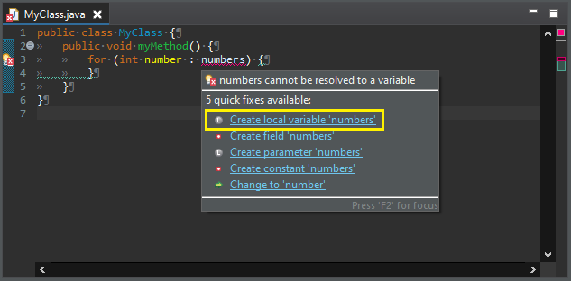
One gets:
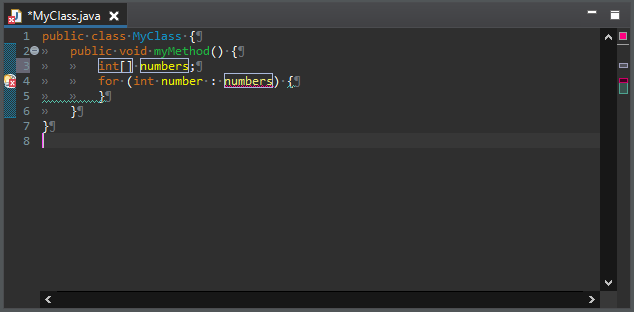
instanceof expression to check an object against a hardcoded class.
The expression must be a supertype of the targeted class.
To apply the clean up, select Use instanceof keyword instead of Class.isInstance() check box on the Code Style tab in your clean up profile.
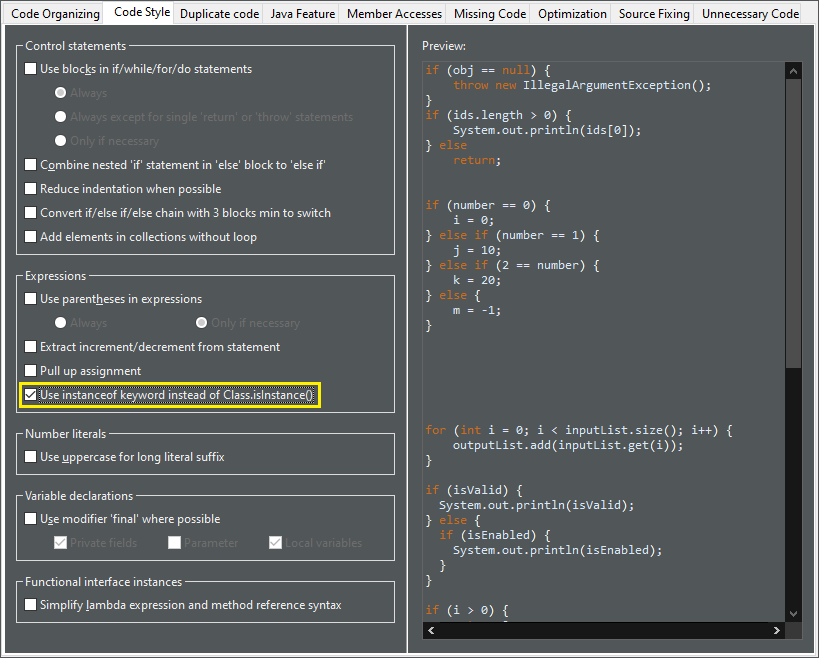
For the given code:

One gets:
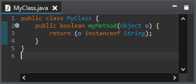
(X && Y) || (X && Z) by (X && (Y || Y)).
The operands must be passive and primitive.
To apply the clean up, select Replace (X && Y) || (X && Z) by (X && (Y || Z)) check box on the Duplicate code tab in your clean up profile.

For the given code:
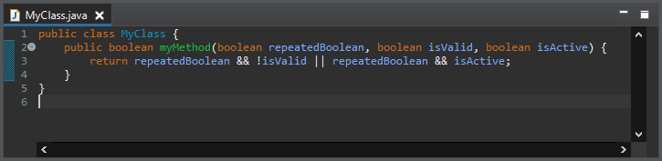
One gets:
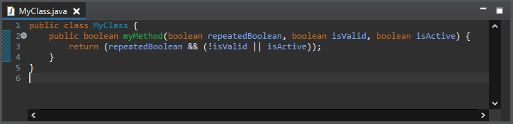
if condition around an outer if condition.
The inner if condition should be common to both if/else clauses of the outer if statement.
The if conditions should be passive.
To apply the clean up, select Pull out a duplicate 'if' from an if/else check box on the Duplicate code tab in your clean up profile.
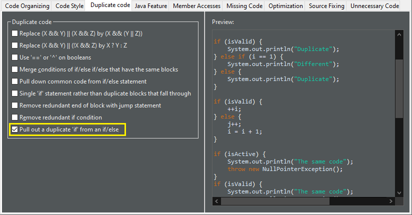
For the given code:
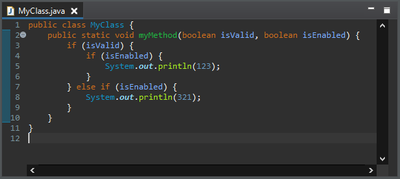
One gets:

if statements with same code block that end with a jump statement.
To apply the clean up, select Single 'if' statement rather than duplicate blocks that fall through check box on the Duplicate code tab in your clean up profile.
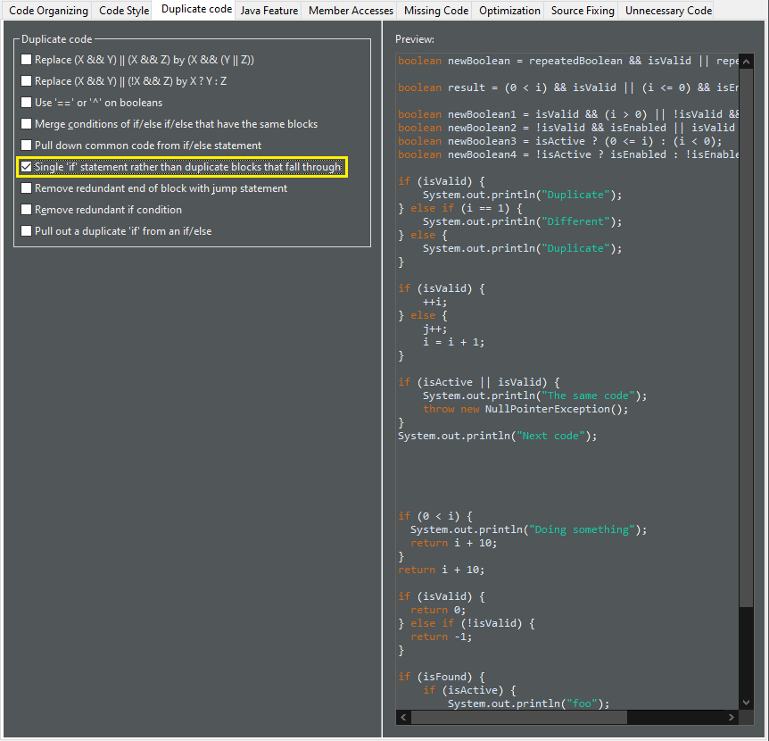
For the given code:
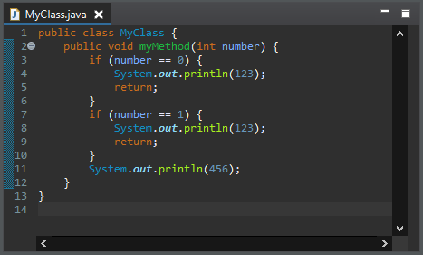
One gets:
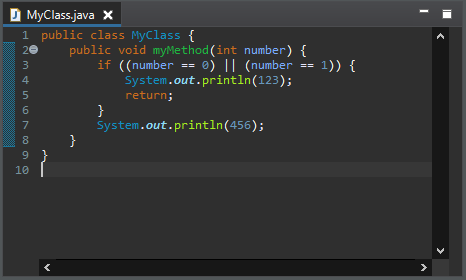
valueOf()).
It dramatically improves the space performance.
To apply the clean up, select valueOf() rather than instantiation check box on the Optimization tab in your clean up profile.

For the given code:
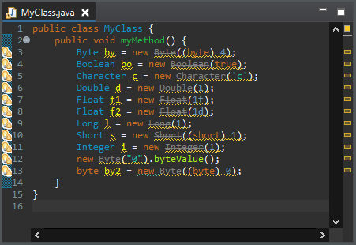
One gets:
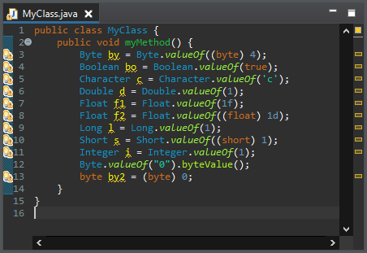
The variable must be not null.
The result should not make more autoboxing/unboxing than the original code.
To apply the clean up, select Primitive type rather than wrapper class check box on the Optimization tab in your clean up profile.
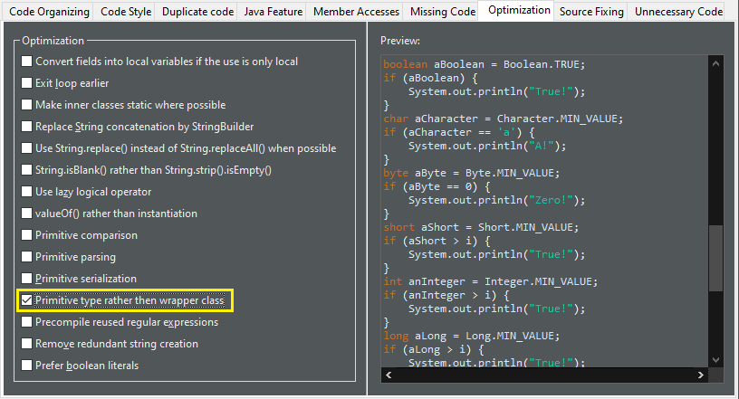
For the given code:
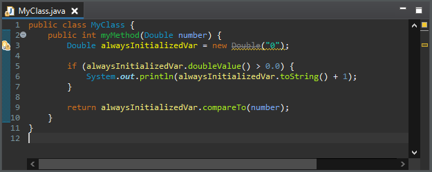
One gets:
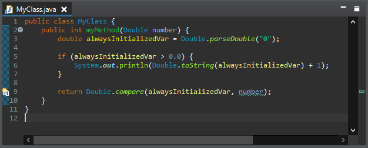
true/false.
The operator can be equals, not equals or XOR.
The constants can be a literal or a java.lang.Boolean constant.
One operand should be primitive so no new null pointer exceptions may occur.
To apply the clean up, select Boolean value rather than comparison check box on the Unnecessary Code tab in your clean up profile.
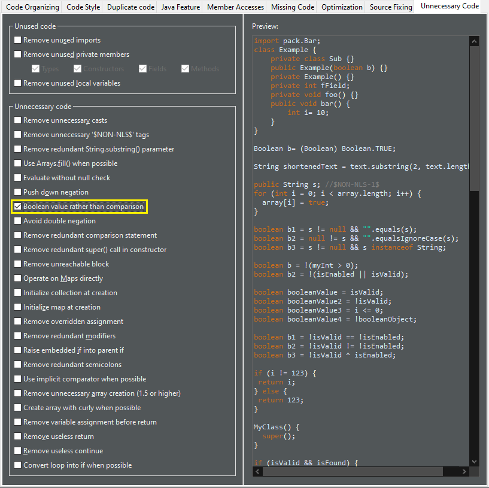
For the given code:
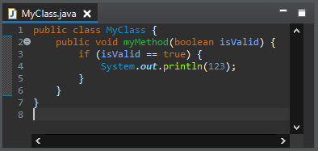
One gets:
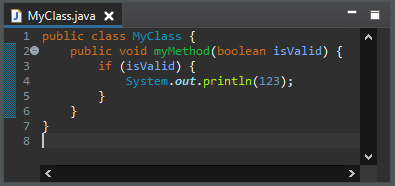
The declared comparator should be an equivalent to the natural order.
It removes anonymous class, lambda, Comparator.comparing(), Comparator.naturalOrder() and null.
It applies on List.sort(Comparator), Collections.sort(List, Comparator), Collections.max(Collection, Comparator) and Collections.min(Collection, Comparator).
If the comparator is used in the method List.sort(Comparator), the method is converted into Collections.sort(List).
To apply the clean up, select Use implicit comparator when possible check box on the Unnecessary Code tab in your clean up profile.
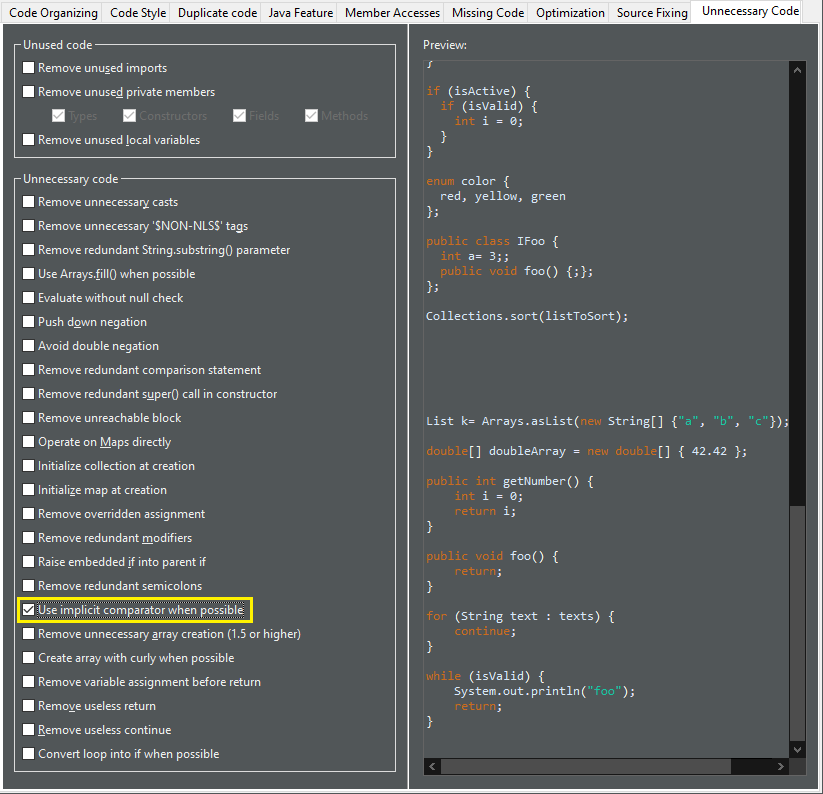
For the given code:
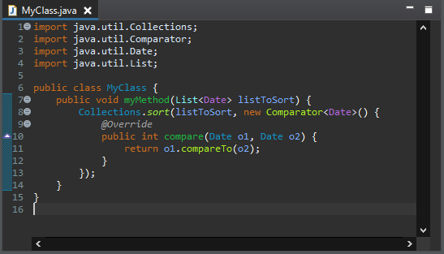
One gets:
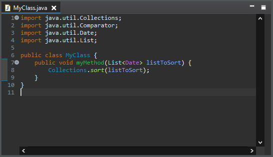
It must be an initialization of a declaration. The declaration must have the same type.
To apply the clean up, select Create array with curly when possible check box on the Unnecessary Code tab in your clean up profile.
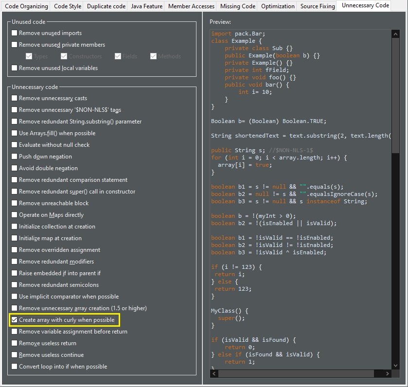
For the given code:
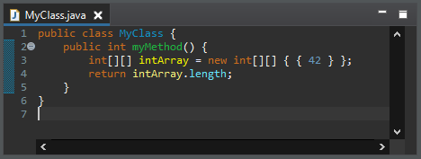
One gets:

An explicit type is added for arrays.
To apply the clean up, select Remove variable assignment before return check box on the Unnecessary Code tab in your clean up profile.
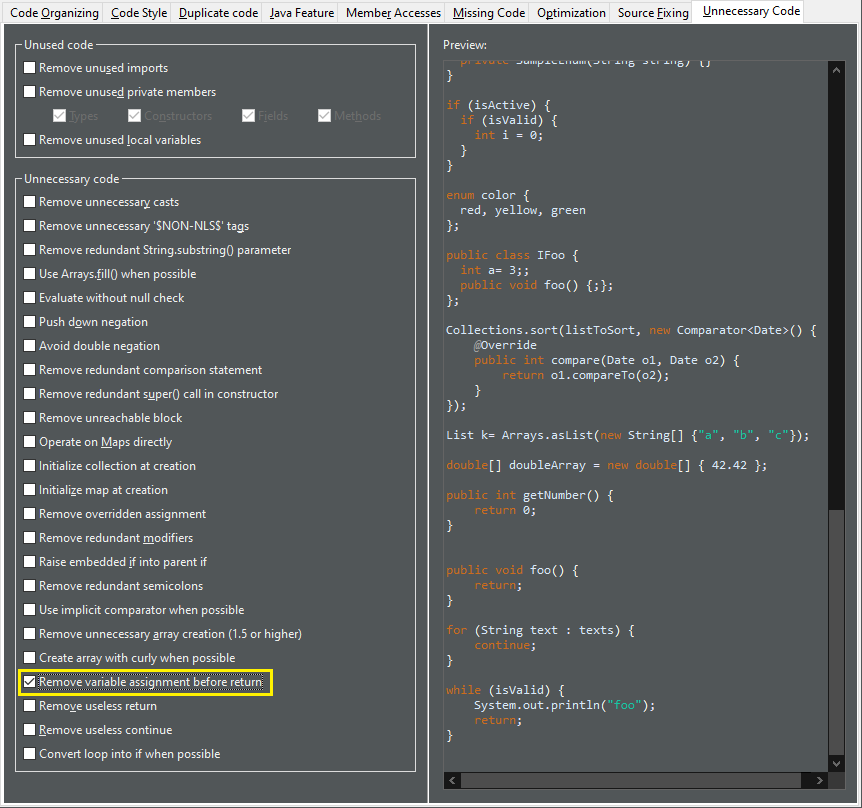
For the given code:
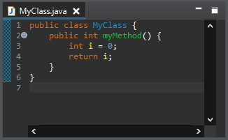
One gets:
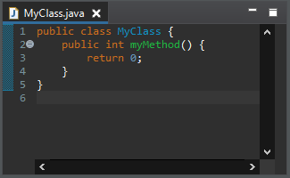
System.getProperty() calls with alternative Java method calls or constants instead.
Using these calls/constants may end up using system defaults (e.g. system default file separator) and thus can no longer be overridden at runtime.
To apply the clean up, select Replace system property with constant check box on the Java Feature tab in your clean up profile. This enables you to check one or more sub-options: File separator, Path separator, Line separator, File encoding, or Boolean property. The last option is used for arbitrary boolean options specified by -Dsome-arbitrary-option.

For the given code:
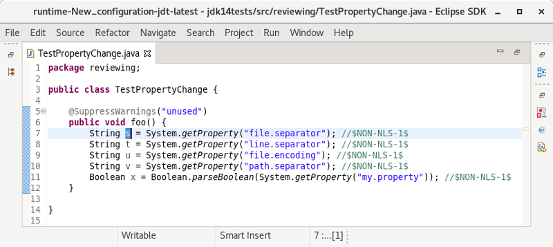
One gets:
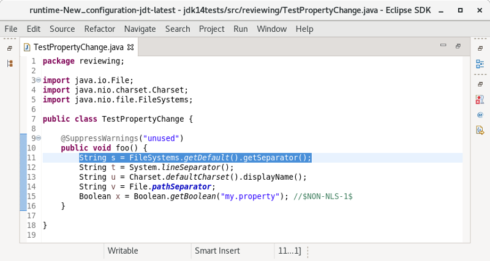
Java Views and Dialogs
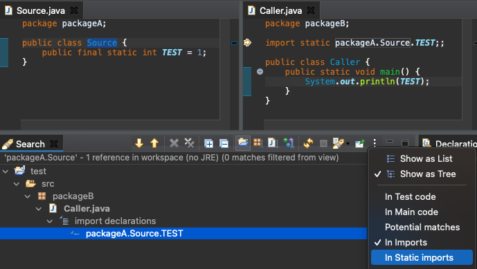
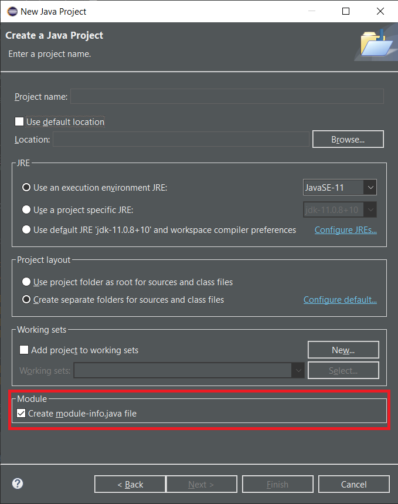
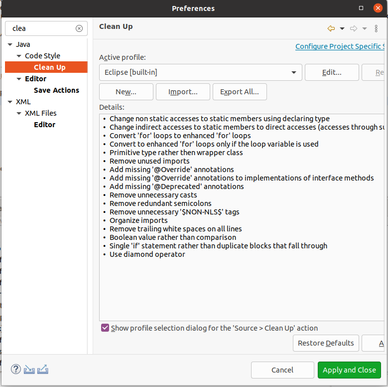
Debug

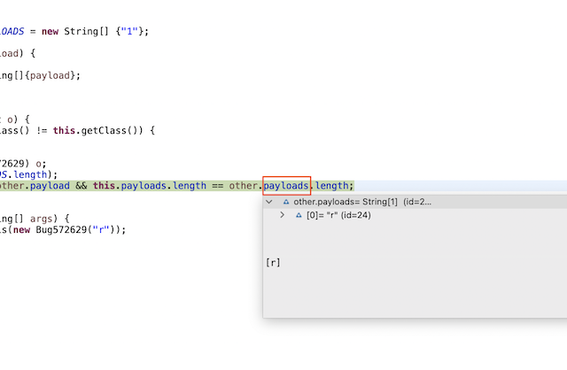
It even works for array length.
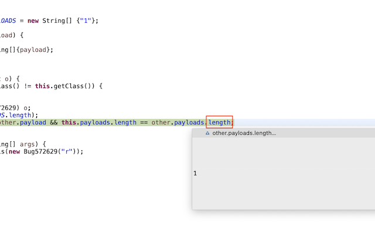